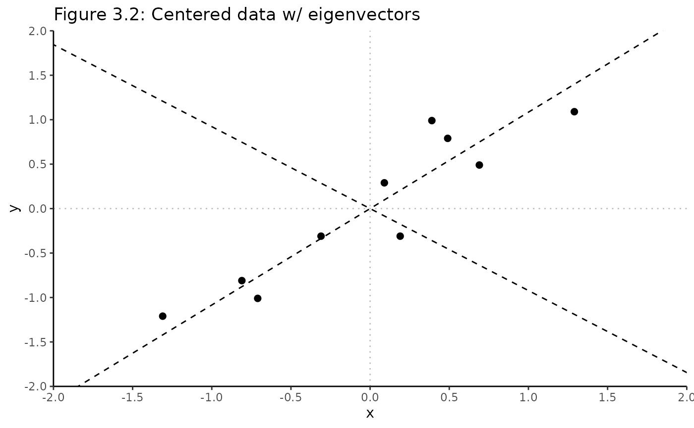

Principal Components Analysis (PCA) Walkthrough
Source:vignettes/PCA_Walkthrough.Rmd
PCA_Walkthrough.Rmd
library(Rubrary)
library(dplyr)
#>
#> Attaching package: 'dplyr'
#> The following objects are masked from 'package:stats':
#>
#> filter, lag
#> The following objects are masked from 'package:base':
#>
#> intersect, setdiff, setequal, union
library(ggplot2)Toy dataset
Replicating the PCA step-by-step from Lindsay Smith’s wonderful PCA tutorial [1]…
Original Dataset
Data <- data.frame(
x = c(2.5, 0.5, 2.2, 1.9, 3.1, 2.3, 2, 1, 1.5, 1.1),
y = c(2.4, 0.7, 2.9, 2.2, 3.0, 2.7, 1.6, 1.1, 1.6, 0.9)
)
Data
#> x y
#> 1 2.5 2.4
#> 2 0.5 0.7
#> 3 2.2 2.9
#> 4 1.9 2.2
#> 5 3.1 3.0
#> 6 2.3 2.7
#> 7 2.0 1.6
#> 8 1.0 1.1
#> 9 1.5 1.6
#> 10 1.1 0.9
DataAdjust <- Data %>%
scale(., center = T, scale = F) %>%
as.data.frame()
DataAdjust
#> x y
#> 1 0.69 0.49
#> 2 -1.31 -1.21
#> 3 0.39 0.99
#> 4 0.09 0.29
#> 5 1.29 1.09
#> 6 0.49 0.79
#> 7 0.19 -0.31
#> 8 -0.81 -0.81
#> 9 -0.31 -0.31
#> 10 -0.71 -1.01
Rubrary::plot_scatter(
df = Data,
xval = "x", yval = "y",
title = "Figure 3.1: Original PCA Data",
guides = F, cormethod = "none"
) +
geom_vline(xintercept = 0, linetype = "dotted", alpha = 0.25) +
geom_hline(yintercept = 0, linetype = "dotted", alpha = 0.25) +
scale_x_continuous(limits = c(-1, 4), expand = c(0, 0)) +
scale_y_continuous(limits = c(-1, 4), expand = c(0, 0))
Eigendecomposition of covariance matrix
# Covariance matrix
cov_mtx <- cov(DataAdjust)
cov_mtx
#> x y
#> x 0.6165556 0.6154444
#> y 0.6154444 0.7165556
# Eigenvalues
eigenvalues = matrix(eigen(cov_mtx)$values)
eigenvalues
#> [,1]
#> [1,] 1.2840277
#> [2,] 0.0490834
# Eigenvectors
eigenvectors = as.matrix(eigen(cov_mtx)$vectors)
eigenvectors
#> [,1] [,2]
#> [1,] 0.6778734 -0.7351787
#> [2,] 0.7351787 0.6778734
Rubrary::plot_scatter(
df = DataAdjust, # Mean adjusted data
xval = "x", yval = "y",
title = "Figure 3.2: Centered data w/ eigenvectors",
guides = F, cormethod = "none"
) +
geom_vline(xintercept = 0, linetype = "dotted", alpha = 0.25) +
geom_hline(yintercept = 0, linetype = "dotted", alpha = 0.25) +
geom_abline(intercept = 0, linetype = "dashed",
slope = eigenvectors[2,1] / eigenvectors[1,1]) + # Eigenvector 1
geom_abline(intercept = 0, linetype = "dashed",
slope = eigenvectors[2,2] / eigenvectors[1,2]) + # Eigenvector 2
scale_x_continuous(limits = c(-2, 2), expand = c(0, 0), breaks = seq(-2, 2, length.out = 9)) +
scale_y_continuous(limits = c(-2, 2), expand = c(0, 0), breaks = seq(-2, 2, length.out = 9))
Deriving new data set
FeatureVector = cbind(eigenvectors[,1], eigenvectors[,2])
FeatureVector
#> [,1] [,2]
#> [1,] 0.6778734 -0.7351787
#> [2,] 0.7351787 0.6778734
FinalData = t(t(FeatureVector) %*% t(DataAdjust)) %>%
as.data.frame() %>%
rename(PC1 = "V1", PC2 = "V2")
FinalData
#> PC1 PC2
#> 1 0.82797019 -0.17511531
#> 2 -1.77758033 0.14285723
#> 3 0.99219749 0.38437499
#> 4 0.27421042 0.13041721
#> 5 1.67580142 -0.20949846
#> 6 0.91294910 0.17528244
#> 7 -0.09910944 -0.34982470
#> 8 -1.14457216 0.04641726
#> 9 -0.43804614 0.01776463
#> 10 -1.22382056 -0.16267529
PCA_scores_manual <- Rubrary::plot_scatter(
df = FinalData, # Mean adjusted data
xval = "PC1", yval = "PC2",
title = "Figure 3.3: Data transformed with 2 eigenvectors",
guides = F, cormethod = "none"
) +
geom_vline(xintercept = 0, linetype = "dotted", alpha = 0.25) +
geom_hline(yintercept = 0, linetype = "dotted", alpha = 0.25) +
scale_x_continuous(limits = c(-2, 2), expand = c(0, 0), breaks = seq(-2, 2, length.out = 9)) +
scale_y_continuous(limits = c(-2, 2), expand = c(0, 0), breaks = seq(-2, 2, length.out = 9))
PCA_scores_manual
Transforming back to original data
RowFinalData = t(FinalData)
RowDataAdjust_1 = solve(t(FeatureVector)) %*% RowFinalData
RowDataAdjust_1
#> [,1] [,2] [,3] [,4] [,5] [,6] [,7] [,8] [,9] [,10]
#> [1,] 0.69 -1.31 0.39 0.09 1.29 0.49 0.19 -0.81 -0.31 -0.71
#> [2,] 0.49 -1.21 0.99 0.29 1.09 0.79 -0.31 -0.81 -0.31 -1.01
RowDataAdjust_2 = FeatureVector %*% RowFinalData
RowDataAdjust_2
#> [,1] [,2] [,3] [,4] [,5] [,6] [,7] [,8] [,9] [,10]
#> [1,] 0.69 -1.31 0.39 0.09 1.29 0.49 0.19 -0.81 -0.31 -0.71
#> [2,] 0.49 -1.21 0.99 0.29 1.09 0.79 -0.31 -0.81 -0.31 -1.01
OriginalMean = c(mean(Data[,1]), mean(Data[,2]))
OriginalData = t(RowDataAdjust_2) %>%
as.data.frame() %>%
rename(x = "V1", y = "V2") %>%
mutate(x = x + OriginalMean[1],
y = y + OriginalMean[2])
OriginalData
#> x y
#> 1 2.5 2.4
#> 2 0.5 0.7
#> 3 2.2 2.9
#> 4 1.9 2.2
#> 5 3.1 3.0
#> 6 2.3 2.7
#> 7 2.0 1.6
#> 8 1.0 1.1
#> 9 1.5 1.6
#> 10 1.1 0.9
Rubrary::plot_scatter(
df = OriginalData,
xval = "x", yval = "y",
title = "Recovered Original PCA Data",
guides = F, cormethod = "none"
) +
geom_vline(xintercept = 0, linetype = "dotted", alpha = 0.25) +
geom_hline(yintercept = 0, linetype = "dotted", alpha = 0.25) +
scale_x_continuous(limits = c(-1, 4), expand = c(0, 0)) +
scale_y_continuous(limits = c(-1, 4), expand = c(0, 0))
PCA <- Rubrary::run_PCA(
df = t(Data), # 1 point per column
center = T, scale = F, tol = 0, screeplot = F
)
Rubrary::plot_PCA(
PCA,
title = "PCA Scores",
) +
geom_vline(xintercept = 0, linetype = "dotted", alpha = 0.25) +
geom_hline(yintercept = 0, linetype = "dotted", alpha = 0.25) +
scale_x_continuous(limits = c(-2, 2), expand = c(0, 0), breaks = seq(-2, 2, length.out = 9)) +
scale_y_continuous(limits = c(-2, 2), expand = c(0, 0), breaks = seq(-2, 2, length.out = 9))
References
[1]
Smith LI. A
tutorial on Principal Components Analysis 2002.